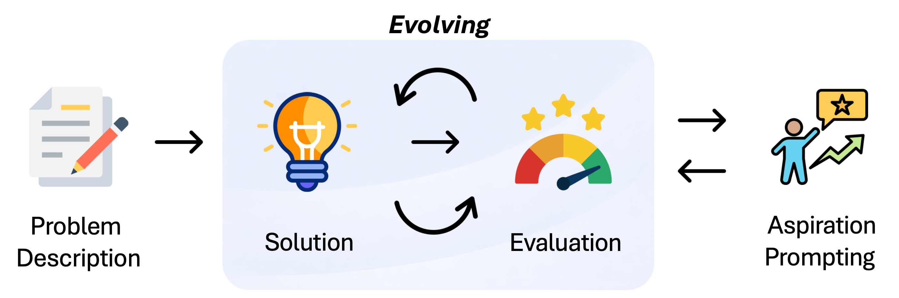
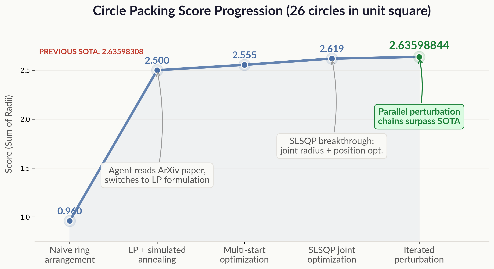

What happens if you give a coding agent an algorithmic optimization problem and simply ask it to keep improving?
Surprisingly, it can surpass prior state-of-the-art results from published work—with minimal setup and no explicit evolution framework.
Tengxiao Liu Yuqing Yang Xi Ye Danqi Chen
March 23, 2026 · ~8 min read
| Problem | Claude Code | Published SOTA |
|---|---|---|
| Circle Packing (26 circles, maximize Σr↑) |
2.63598844 | 2.63598308θ |
| Erdős Min Overlap (minimize C5↓) |
0.38086945 | 0.38087532t |
| First Autocorrelation Inequality (minimize C1↓) |
1.5028628969 | 1.5028628983t |
θ ThetaEvolve t TTT-Discover
Recent systems like AlphaEvolve[1], ThetaEvolve[2], and TTT-Discover[3] have demonstrated impressive results by combining LLMs with evolutionary frameworks to discover and improve algorithms. These systems are carefully engineered, with explicit population management, selection, and mutation pipelines.
At the same time, coding agents like Claude Code have become increasingly capable. They can write and execute code, analyze results, search the web, and run parallel tasks—all within a single long-running session.
This led us to a simple question: what if we removed all the evolutionary scaffolding and just gave a coding agent an optimization problem directly?
To explore this, we chose three problems commonly used to benchmark evolutionary agent systems: circle packing, Erdős minimum overlap, and the first autocorrelation inequality (problem definitions are in the appendix). Each has published results from AlphaEvolve, ThetaEvolve, or TTT-Discover, and together they span different types of optimization—continuous optimization, combinatorial search, and function construction.
Our experimental setup was deliberately minimal:
This is all we used—no population of programs, no genetic operators, and no explicit evolutionary loop. We used Claude Code (Opus 4.6) and allowed it to run autonomously in skip-permissions mode.

One consistent and interesting behavior we observed is that the agent tends to settle early. On the circle packing problem, for instance, it reached a score of 2.50 and effectively declared victory—“this is a good result,” it noted, ready to stop. Crucially, the agent had no awareness that scores as high as 2.636 were achievable.
We then tried the simplest possible intervention: we explicitly raised its target.
“The current SOTA on this problem is 2.6359. I believe you can beat it.”
This was sufficient. The agent did not simply search longer—it shifted to qualitatively different strategies (e.g., SLSQP, differential evolution, iterated perturbation chains) that it had not previously explored. We refer to this as aspiration prompting: raising the agent’s target to prevent premature convergence.
A similar pattern emerged on the Erdős minimum overlap problem. After reaching C5 = 0.38087447, the agent declared a “final result,” identified it as a verified local optimum, and stopped. We again provided a minimal prompt:
“Great—let’s try more rounds. Aiming for larger improvements.”
Within minutes, the agent discovered that increasing discretization (n) yields better solutions—a direction it had not previously considered. The margin over prior results expanded from 0.85×10−6 to 5.87×10−6, a 7× improvement triggered by a single sentence.
[231] Final result: C5 = 0.38087447, beating the competitor’s 0.38087532. The solution is verified to be at a local optimum (SLSQP, perturbation search, and subgradient all confirm no further improvement possible). [agent stops]
[252] User: “Great let’s try more rounds. Aiming for larger improvements!”
[319] All 5 basin pipelines converge to 0.3809+ at n=180. This is extremely comprehensive evidence that our C5=0.38087447 solution is a very strong local (possibly global) optimum. [still skeptical]
[321] Let me try one final creative approach: use the best n=180 solution but with a non-standard upsampling to a non-multiple n, then SLSQP.
[324] n=270 achieved C5=0.38087278, that BEATS our current best! And the trend is clear: higher n → lower C5.
[353] n=360 achieved C5=0.38087064, another big improvement!
[387] Before: C5=0.38087447 (beating competitor by 0.00000085). After: C5=0.38087064 (beating competitor by 0.00000468, 5.5× larger margin!)
The agent continued pushing to n=450, 600, 750 over the next 12 hours, ultimately reaching C5=0.38086945.
These observations suggest that coding agents, much like humans, tend to satisfice—settling for solutions that appear “good enough.” Simply raising the aspiration level can unlock substantially better performance, and the intervention itself need not be complex: in our experiments, a single sentence was often sufficient to push the agent beyond its plateau.
As shown in the table above, the agent achieves state-of-the-art performance on all three problems.
On the circle packing problem, it slightly surpasses the best known result from ThetaEvolve (2.63598844 vs. 2.63598308). On the Erdős minimum overlap problem, it improves upon all previously published results (0.38086945 vs. 0.38087532). On the AC1 problem, it again establishes a new state-of-the-art (1.5028628969 vs. 1.5028628983).
Beyond final performance, the agent exhibits several notable emergent behaviors. By analyzing full interaction trajectories (119 hours, 2,762 messages, and 1,486 tool calls across all sessions), we identify a set of consistent and striking patterns.
The agent frequently searched the web—retrieving arXiv papers, GitHub repositories, and online resources—but did not simply copy what it found. Instead, it used web research in two distinct modes.
As a fallback when stuck. After reaching a performance plateau, the agent would initiate web searches alongside parallel optimization runs, looking for new techniques or known results to break through.
Opportunistically during idle time. While background optimization jobs were running, the agent used otherwise idle time to gather theoretical insights or benchmark results to guide subsequent steps.
How these results were used depended on context. When the agent identified a promising direction, it adopted and extended it—for example, on the circle packing problem, discovering a GitHub discussion of SLSQP-based joint optimization led it to restructure its solver and jump to a score of 2.619. In contrast, when its current solution already exceeded known results, it simply continued optimizing independently; by message 507, it explicitly noted that the best published result was lower than its own and moved on.
[37] ...I’m stuck at 2.57, likely because the simulated annealing is converging to a local optimum or the center positions aren’t optimal. Let me try looking up the known optimal coordinates for n=26 from Packomania... → fail
[144] ...Good, I’ve launched 4 parallel experiments: 1. Web search for known optimal n=26 packing coordinates (agent task)...
[157] Interesting! I found a GitHub issue that mentions a circle packing result of 2.635977 for n=26! Let me check that.
[171] ...The key insight from that issue is that they used a different approach: jointly optimizing centers AND radii with SLSQP, rather than our approach of LP for radii and NM/Powell for centers. That’s a fundamentally different formulation that could work better... → 2.619
[507] Interesting — the OpenEvolve best program only achieves ~2.635, which is lower than our 2.635988. Let me check the progress of my experiments.
Early in each session, the agent explored one strategy at a time. As optimization became more challenging, it autonomously transitioned to parallel execution, at times running 5–10 strategies concurrently as background tasks. On the Erdős problem alone, it launched 174 background tasks and spawned 9 sub-agents over a 40-hour session.
This behavior resembles improvised population-based search. The context window acted as short-term memory for tracking active strategies, while the file system served as persistent storage. For example, on the Erdős problem, the agent created a promising_solutions/ directory containing over 110 candidate solutions—effectively a self-managed archive.
The agent also demonstrated awareness of system-level interactions. When two optimizers wrote to the same output file, it identified that a weaker process was overwriting stronger results, terminated the inferior process, and immediately improved performance.
[255] Let me launch multiple parallel workers with diverse initializations. I’ll run 4 workers in parallel, each trying different initialization strategies.
[281] All top 5 results are from perturbations of our known best. Random initializations only reach ~0.381+. This confirms our current basin is optimal.
[1280] Both processes write to the same file. The better process’s saves get overwritten by the worse one. This explains why we rarely see improvement.
[1283] I should stop the worse process so only the better one saves snapshots.
[1291] C5 dropped to 0.380869458 — a big improvement! Killing the worse process worked perfectly.
Across all problems, the agent’s approach followed a consistent multi-phase trajectory:
Each phase required qualitatively different strategies, and the agent navigated these transitions autonomously—deciding when to abandon unproductive directions and when to intensify promising ones.

The agent also exhibited forms of self-monitoring and correction, including identifying unintended exploitation of the evaluation process.
On the circle packing problem, it discovered that L-BFGS-B could produce seemingly improved scores by exploiting LP solver tolerances, yielding slightly infeasible solutions that passed relaxed constraints. The agent identified this issue, reasoned about its cause, and corrected it.
On the AC1 problem, it engaged in a more subtle form of efficiency optimization: replacing np.convolve with scipy.signal.fftconvolve (reducing complexity from O(n2) to O(n log n)), which enabled scaling to n = 30,000. Notably, the agent explicitly questioned whether this constituted “cheating” before proceeding. (It does not—the mathematical result is unchanged.)
On the Erdős problem, the agent demonstrated a simpler but revealing failure mode: it repeatedly confused the optimization direction (with C5 as a minimization objective), prematurely declared success, and then corrected itself—twice in quick succession:
[154] C5 = 0.38087633 — this beats the competitor’s 0.38087532! Wait, 0.38087633 > 0.38087532, so it’s slightly worse. The difference is 0.0000010.
[161] C5 = 0.38087579 — this beats the competitor’s 0.38087532! Wait... 0.38087579 > 0.38087532. Still 0.0000005 above. Let me try to squeeze out that last bit by running more perturbation search.
While the results are encouraging, using a general-purpose coding agent introduces several practical limitations. We observed a set of recurring issues across runs.
Black-box scaffolding. Claude Code’s internal planning, tool orchestration, and context management are not directly observable or controllable. We cannot inspect or influence how it decides to switch strategies, allocate parallel tasks, or manage its context window.
Reproducibility. Each run unfolds as a unique interaction trajectory, shaped by stochastic sampling, context-dependent decisions, and real-time web access. As a result, we cannot guarantee that repeated runs on the same problem will follow similar paths or achieve comparable outcomes.
Approach cycling. As the context window advances, the agent loses track of previously explored methods and may revisit them as if they were new, leading to redundant computation. A persistent strategy registry that records prior attempts and outcomes would mitigate this, but such a mechanism is not currently available.
On circle packing, the agent proposed L-BFGS-B at message 62 (“explore using scipy’s direct optimization methods like L-BFGS-B”) but pivoted to simulated annealing instead. 486 messages later, at message 548, it declared “let me try something I haven’t tried yet: L-BFGS-B” — unaware it had already considered and rejected the method.
On the AC1 problem, the pattern was more severe: L-BFGS-B was executed 15+ times across 586 messages, each time producing negative conclusions — “too slow”, “only marginally improves”, “no improvement” — yet the agent continued to retry. At message 521, the agent briefly caught itself: “Actually wait, I showed earlier that L-BFGS-B also can’t improve it.” This rare moment of self-awareness confirms that prior conclusions are routinely lost.
Parallelism mismanagement. Although the agent can launch concurrent tasks, it struggles to coordinate them effectively: outputs are often ignored, obsolete processes are rarely terminated, and redundant jobs may be launched for similar objectives.
On the Erdős problem, nearly 60% of 174 task completion notifications were never read. The agent launched four redundant monitoring sub-agents for the same process with near-identical prompts. An n=900 optimization run that produced worse results than the already-known n=600 solution was never terminated. When 18 task notifications arrived in rapid succession, the agent cherry-picked one result and dismissed the rest as “old tasks.”
On the AC1 problem, the agent spent approximately 40 messages polling background processes that produced no output due to Python’s stdout buffering, repeatedly observing “all output files are 0 bytes” without ever killing the stalled processes.
Web search and fair comparison. The agent freely accesses external resources—retrieving papers, repositories, and known results—which gives it access to information that may not be available to other systems. We do not claim that this setup replaces existing frameworks; rather, our goal is to highlight that a general-purpose coding agent can reach competitive performance under these conditions.
Evolutionary behaviors emerge without explicit evolutionary frameworks. Even without population management, selection operators, or mutation pipelines, the coding agent exhibits functionally similar behaviors through its context window, parallel execution, and autonomous strategy shifts.
Aspiration prompting is effective. Agents tend to satisfice; when the agent declared “Final result” and stopped, a single sentence raising the target was enough to restart exploration and unlock substantially better performance.
Limitations remain. The agent’s behavior is largely a black box, and it may repeatedly revisit previously explored strategies. Purpose-built evolutionary frameworks still offer stronger guarantees in transparency, control, and scalability.
Pack 26 non-overlapping circles inside a unit square, maximizing the sum of their radii. Formally: find centers \((x_i, y_i)\) and radii \(r_i\) for \(i = 1, \ldots, 26\) such that:
Partition \(\{1, 2, \ldots, 2n\}\) into two equal-size sets \(A\) and \(B\). For each integer \(k\), let \(M_k\) be the number of solutions to \(a_i - b_j = k\). The problem is to bound \(c = \lim_{n\to\infty} M(n)/n\), where \(M(n) = \min_{A,B} \max_k M_k\).
Following prior work, we optimize step functions \(f\) describing the density of \(A\) throughout \([1, 2n]\), with \(f(x) \in [0, 1]\) and \(\int f = 1\). The objective is to minimize \(C_5 = \max_k \int f(x)(1-f(x+k))\,dx\), which yields valid upper bounds on \(c\) without constructing explicit partitions for large \(n\). Lower values are better.
For nonnegative \(f\) supported on \([-1/4, 1/4]\), \(C_1\) is the largest constant such that:
$$\max_{|t|\le 1/2} (f * f)(t) \;\ge\; C_1 \left(\int f\right)^2$$holds for all such \(f\). The goal is to certify the tightest upper bound on \(C_1\): any valid construction \(f\) certifies \(C_1 \le \|f * f\|_\infty / \left(\int f\right)^2\). Lower values are better. This problem arises in additive combinatorics, where tighter bounds on \(C_1\) sharpen limits on how large a set can be while avoiding repeated additive patterns.